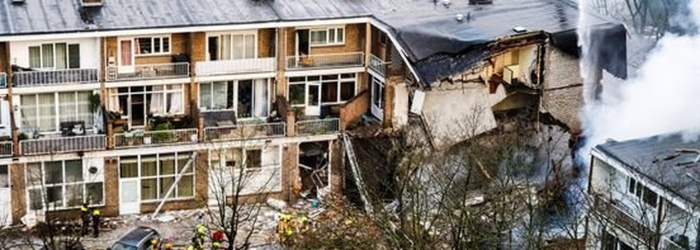

NANDO
DE GROOT
I am Nando, a multi-disciplinary film-maker based in Rotterdam, NL
Recent
 De Jeugdzorg FilesDocumentary · EO / NPO 2
De Jeugdzorg FilesDocumentary · EO / NPO 2 De NieuwkomersDocumentary series · EO / NPO 1
De NieuwkomersDocumentary series · EO / NPO 1
TarwekampDocumentary · EO / NPO StartI am Nando, a multi-disciplinary film-maker based in Rotterdam, NL
De Jeugdzorg FilesDocumentary · EO / NPO 2De NieuwkomersDocumentary series · EO / NPO 1
TarwekampDocumentary · EO / NPO Start